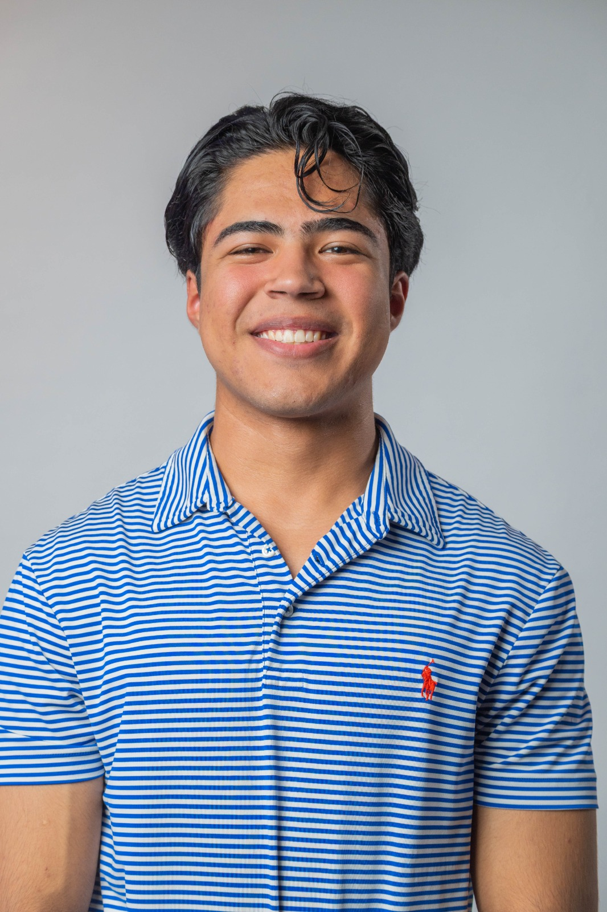

Electronics engineering student at Tecnológico de Monterrey specializing in hardware design and power electronics. I design, validate, and test real systems — from firmware shields to power inverters — and I've done it inside industry teams, not just the lab.

I'm an electronics engineering student at Tecnológico de Monterrey (GPA 3.8/4.0, Full Academic Leadership Scholarship), specializing in hardware design and power electronics. I'm heading to HKUST for an exchange semester in Fall 2026.
Most of what's on this site comes from working inside real engineering teams — validating firmware at Carrier, leading power electronics for RoBorregos' competition robot, and building circuits with industry sponsors like Bendix, DIRAM, OPmobility, and Acuity Brands.
Outside the lab, I lead as Director of Finance for RoBorregos, managing a $700K+ MXN budget and securing $400K+ MXN in sponsorships for national and international competitions. I was also selected as the first fully sponsored student for the PLEI Asia Mission, an international business and leadership program conducting market research across China, Taiwan, Indonesia, Thailand, Malaysia, and Vietnam.
Custom Altium PCB using an ATmega328 and DG409 analog multiplexer, paired with a C# GUI to evaluate real-time data from boards sharing the same address.
Diagnosed and resolved PCB failures that had gone unsolved for over a year, proposing component and design changes and replicating legacy failure modes.
Built a telemetry system over UART and I2C with ESP32, enabling real-time vehicle status acquisition and post-run data analysis in MATLAB.
Op-amp based conditioning circuit to control a motor-driven window blind — no embedded firmware, just gain, filtering, and stability design.
Designed and simulated a custom inductor in COMSOL Multiphysics, optimizing magnetic performance and validating constraints with Bendix engineers.
See Project P.01 above — a single-phase to three-phase inverter built this semester, the most direct power-electronics case study on this site so far.
Placeholder — a future project or analysis around energy storage design.
Placeholder — power factor correction, inverter design, or converter work aimed at larger energy systems.